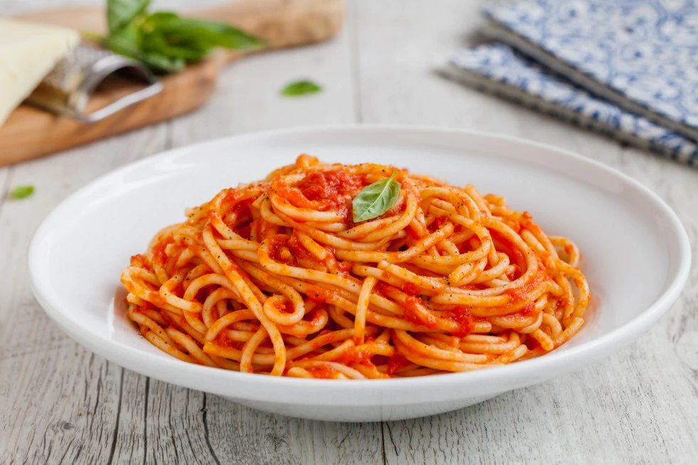

Pasta with Tomato Sauce

Description
Pasta al pomodoro is a classic Italian dish. It’s simple yet full of flavor, perfect for a quick lunch or dinner.
Ingredients
- 200g pasta (spaghetti, penne, or fusilli)
- 400g canned peeled tomatoes (or tomato puree)
- 2 garlic cloves
- 4 tablespoons extra virgin olive oil
- Fresh basil
- Salt to taste
- Grated Parmigiano Reggiano (optional)
Steps
- Boil a pot of salted water for the pasta.
- In a pan, heat the olive oil and add the crushed garlic cloves. Sauté until the garlic turns golden.
- Add the peeled tomatoes (or tomato puree) to the pan, season with salt, and cook on medium-low heat for about 15-20 minutes until the sauce thickens.
- Cook the pasta in the boiling water according to the package instructions.
- Drain the pasta al dente and add it directly to the pan with the sauce. Stir well to combine.
- Serve the pasta al pomodoro with fresh basil leaves and a sprinkle of Parmigiano Reggiano if desired.